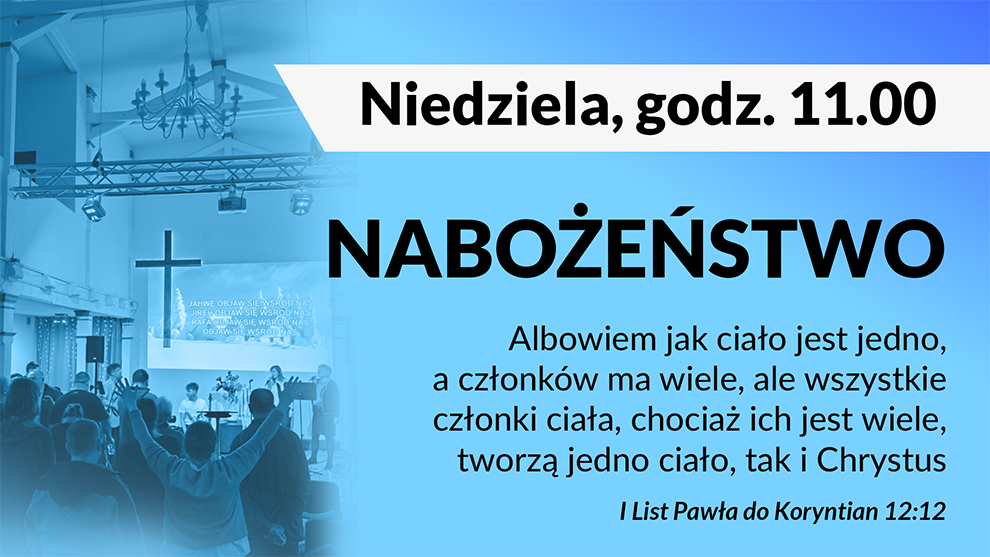
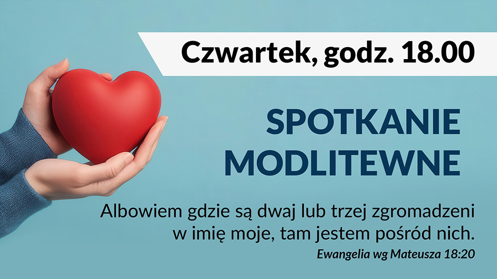
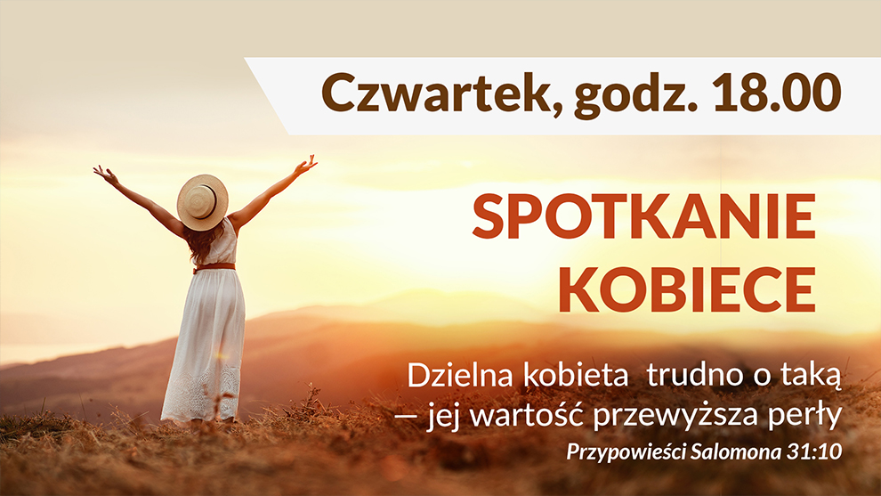
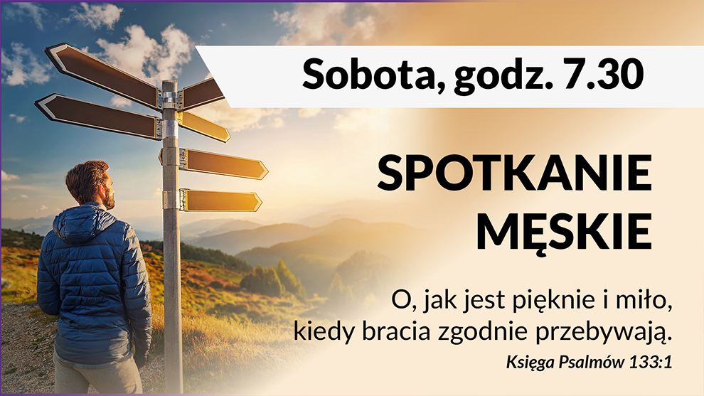
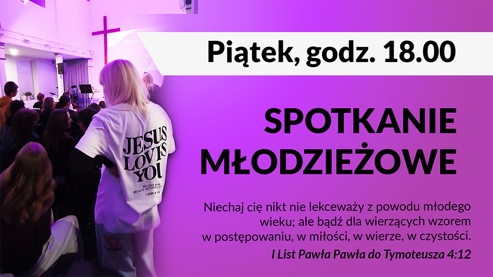
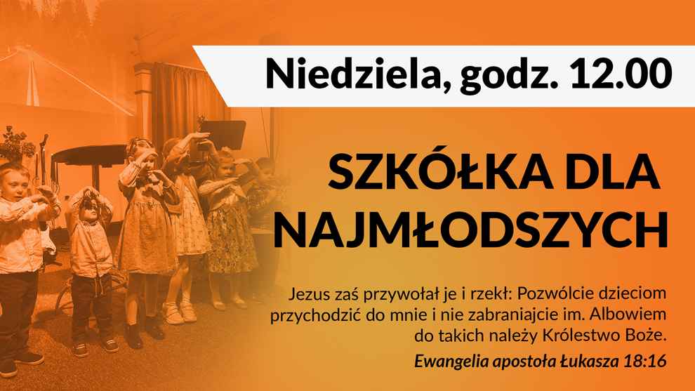
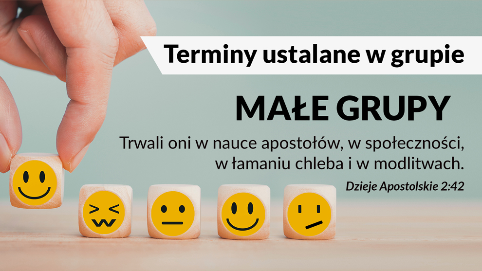

Nabożeństwo niedzielne
To spotkanie całego Kościoła podczas wspólnego wielbienia Boga, modlitwy i duchowego wzrostu. Zapraszamy również osoby, które są ciekawe i chcą zobaczyć „Jak to u nas jest”. Jesteśmy otwarci dla każdego. Czego możesz się spodziewać? Na pewno ogromnej życzliwości, wspólnej modlitwy, nauczania opartego na Biblii, ale przede wszystkim Bożej Obecności. Po nabożeństwie zostań na „kawiarence” - to czas relacji i poczęstunku. Mamy szansę porozmawiać i bliżej się poznać.
Kiedy: każda niedziela od 11:00, czas: ok. 2 godzin

Spotkania modlitewne
To czas wspólnego uwielbienia Boga i modlitwy. Jako kościół modlimy się o ludzi oraz potrzeby; o uzdrowienie chorych, o silne małżeństwa oraz całe rodziny, o nasze miasto i jego mieszkańców. To czas, kiedy można oddać Bogu swoje problemy i doświdczyć potężnej siły wstawienniczej modlitwy kościoła.
Kiedy: co drugi czwartek, godz. 18:00, czas: ok. godziny
Dokładne daty w zakładce Co u nas

Spotkanie kobiet
To przestrzeń dla kobiet w różnym wieku. Jest to czas budowania relacji, dzielenia się troskami oraz radościami. Uczymy się uważności na Ducha Świętego oraz na siebie nawzajem. Rozmawiamy, wspiermy się i modlimy się. Co jakiś czas organizujemy spotkania tematyczne, jeździmy wspólnie na warsztaty, koferencje oraz integracje.
Kiedy: co drugi czwartek, godz. 18:00, czas: ok. godziny
Dokładne daty w zakładce Co u nas

Spotkanie mężczyzn
Czas dla facetów w każdym wieku. Spotykamy się, aby z męskiej perspektywy pogadać szczerze o życiu, wierze, odpowiedzialności oraz wyzwaniach. To też czas budowania charakteru i wspólnych relacji. Celem jest wzajemne wsparcie oraz motywowanie się do działania — zarówno duchowo, jak i w codzienności.
Kiedy: sobota, godz. 7:30, czas: ok. 2 godzin

Spotkanie młodzieży
Spotkania młodych ludzi, których łaczą pytania związane z Bogiem. W kameralnej atmosferze przy chipsach integrujemy się i rozmawiamy o życiu, szkole i dylematach dotyczących przyszłości i teraźniejszości. Chcemy, jako młode pokolenie poznać Boga w autentyczny sposób i znaleźć swoje miejsce we wspólnocie kościoła.
Kiedy: piątek godz. 18:00, czas: ok. 3 godziny

Szkółka dla najmłodszych
Szkółka jest dedykowana dzieciom w wieku przedszkolnym i wczesnoszkolnym. Odbywa się równolegle z nabożeństwem (po części muzycznej). Rodzice mogą z uwagą słuchać nauczania, podczas gdy najmłodsi udają się z opiekunem do sali piętro wyżej. Zajęcia prowadzone są w przystępny i ciekawy sposób — przez zabawę, historie biblijne, śpiew oraz różne aktywności. Celem jest pokazanie dzieciom, kim jest Bóg, w sposób, który naprawdę do nich trafia.
Kiedy: niedziela, godz. 12:00, czas: ok. 30 min

Małe grupy
To mniejsze, bardziej kameralne spotkania w domach, gdzie łatwiej się otworzyć i lepiej poznać innych. Zapraszamy sąsiadów i znajomych, by budować relacje i swobodnie dzielić się doświadczeniami z Bogiem. Jest czas na rozmowę, modlitwę i dzielenie się życiem — taka bardziej „rodzinna” forma Kościoła na co dzień.
Kiedy: spotkania ustalane w grupach
Jeśli chcesz dołączyć do grupy - skontaktuj się z pastorem